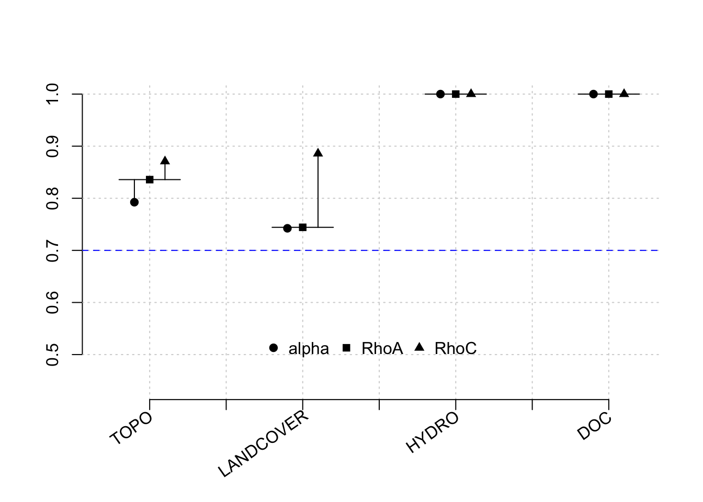

5.1 MODEL 1: Flow stage classifier as a latent variable. Total protein-like component
To include classifications in a PLS model, we generate a column in the dataset for each classificaiton, and a binomial indicators in each row. For example, of the stream stage at the time of sampling is just after peak flow, that sample will have a ‘1’ in the upper descending limb column, and a ‘0’ in all others. Potential classifications are ‘rising limb’, ‘upper descending limb’, ‘lower descending limb’ and baseflow. In the path model, lower_decreasing = stage_1, upper_decreasing = stage_2, increasing = stage_3. These classifications were developed by finding the date of peak flow for the respective year and stream, and the dates for the end and beginning of baseflow for each calendar year. Then the ‘midway’ point between peakflow and the first date of baseflow delineates upper and lower descending limbs. (find the name of this script, pretty sure its an .ipynb) Build the outer model or ‘constructs’ or latent variables
Our indicators for each latent variable are as follows:
Topo:
–mean distance that allochthonous water has to travel to the stream channel
–mean aspect in radians
–mean subcatchment TWI
Landcover:
– % of subcatchment pixels with >50% beetlekill
– mean NDVI
Hydro:
–log discharge/m2
DOM:
– sample fluorescence of protein-like component
simple_FEF_mm <- constructs(
composite("TOPO", multi_items("topo_", 1:3)),
composite("HYDRO", single_item("hydro_1")),
composite("LANDCOVER", multi_items("landcover_", 1:2)),
composite("DOM", single_item('dom_1')),
composite("STAGE", multi_items("stage_", 1:4))
)Now for the structural model:
# Create structural model
simple_FEF_sm <- relationships(
paths(from = c("TOPO"), to = c("HYDRO", "LANDCOVER", "DOM")),
paths(from = c("LANDCOVER"), to = c("HYDRO", "DOM")),
paths(from = c("HYDRO"), to = c("DOM")),
paths(from = c("STAGE"), to = c("HYDRO", "DOM"))
)
# Note that neither a dataset nor a measurement model is specified in the structural model stage, so we can reuse the structural model object simple_sm across different datasets and measurement models.Model Estimation using the PLS-SEM algorithm. See demo for more info.
Output summary
Recall that path coefficients indicate the relationship between the two latent variables and we generally want reliability indicators to be high. e.g., rhoC represents internal consistency reliability, which is the extent to which indicators measuring the same construct are associated with each other. values over 0.95 can indicate redundancy, but values over 0.7 are preferred.
## Warning in summary.lm(independents_regr): essentially perfect fit: summary may be unreliable##
## Results from package seminr (2.3.4)
##
## Path Coefficients:
## HYDRO LANDCOVER DOM
## R^2 0.282 0.576 0.335
## AdjR^2 0.258 0.571 0.304
## TOPO 0.139 0.759 0.004
## LANDCOVER -0.559 . -0.142
## HYDRO . . -0.209
## STAGE 0.258 . 0.603
##
## Reliability:
## alpha rhoC AVE rhoA
## TOPO 0.907 0.940 0.839 0.960
## LANDCOVER 0.865 0.936 0.880 0.875
## HYDRO 1.000 1.000 1.000 1.000
## STAGE -21.902 0.067 0.315 0.353
## DOM 1.000 1.000 1.000 1.000
##
## Alpha, rhoC, and rhoA should exceed 0.7 while AVE should exceed 0.5A plot of result reliability measures:

5.1.1 Results of bootstrapped PLS
# Extract the bootstrapped HTMT
sum_boot_fef <- summary(boot_simple_fef, alpha= 0.10)
sum_boot_fef$bootstrapped_HTMT## Original Est. Bootstrap Mean Bootstrap SD T Stat. 5% CI 95% CI
## TOPO -> LANDCOVER 0.817 0.818 0.048 16.893 0.730 0.889
## TOPO -> HYDRO 0.265 0.269 0.081 3.279 0.135 0.394
## TOPO -> STAGE 0.138 0.210 0.071 1.931 0.103 0.330
## TOPO -> DOM 0.053 0.096 0.055 0.977 0.027 0.195
## LANDCOVER -> HYDRO 0.493 0.492 0.140 3.516 0.255 0.704
## LANDCOVER -> STAGE 0.141 0.215 0.078 1.818 0.099 0.352
## LANDCOVER -> DOM 0.048 0.078 0.050 0.975 0.020 0.173
## HYDRO -> STAGE 0.272 0.310 0.089 3.048 0.167 0.453
## HYDRO -> DOM 0.013 0.045 0.036 0.372 0.004 0.111
## STAGE -> DOM 0.473 0.487 0.079 6.009 0.347 0.611This gives us the confidence intervals of the HTMT ratio.
Interpretation:
In this model, we are seeing
-strong, significant relationships between topography and landcover, landcover and discharge (hydro), and flow stage (classified by hydrograph limb) and DOM, which is indicated by the total fluorescence of the protein-like component.
- significant but weak relationships between flow stage and hydro, and hydro and DOM
- weak and insignificant relationships between
topography and DOM, topography and hydrology, landcover and DOM.
This makes sense. The response variable in this analysis is the total amount of the protein-like component in the sample. We expect this to be positively correlated with the DOM concentration, which typically follows trends similar to flow/runoff.
Let’s see if this same model tells a different story if we instead look at the relative fraction of protein in the sample.